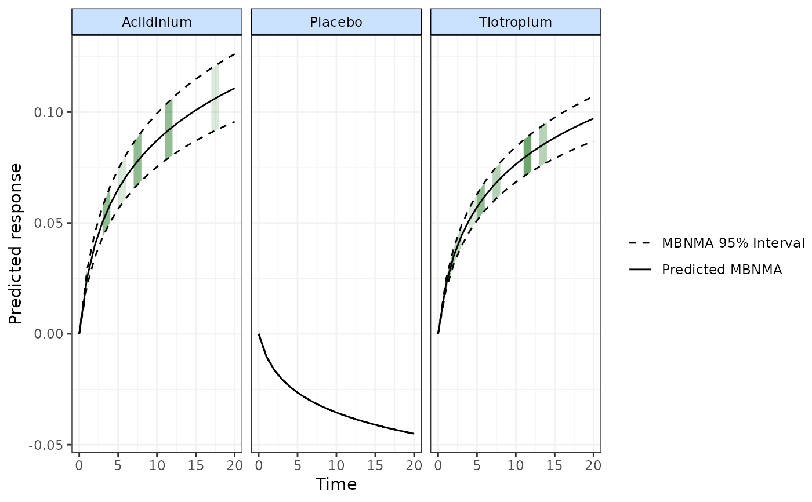
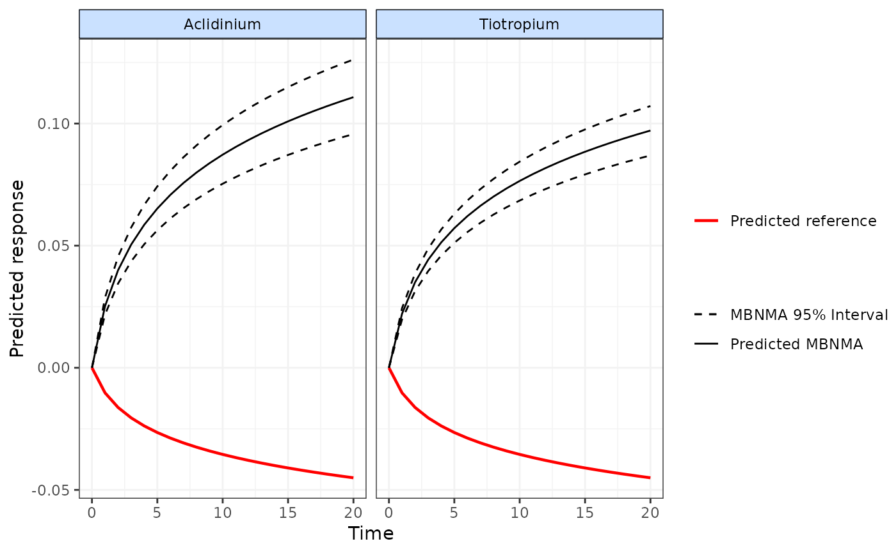
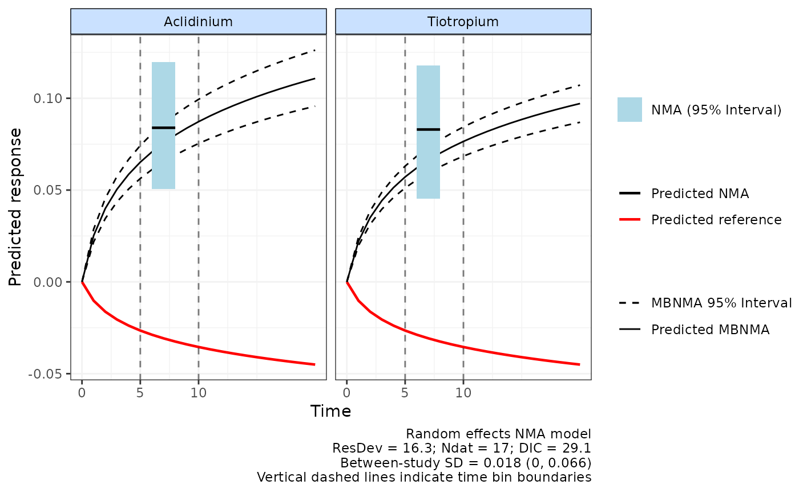
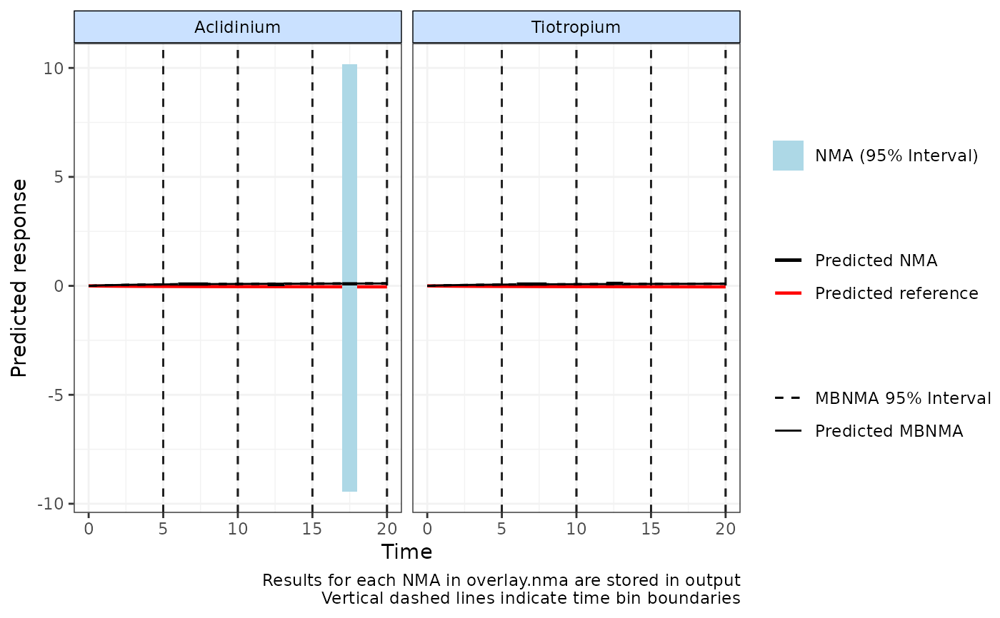

Plots predicted responses from a time-course MBNMA model
plot.mb.predict.RdPlots predicted responses from a time-course MBNMA model
Usage
# S3 method for mb.predict
plot(
x,
disp.obs = FALSE,
overlay.ref = TRUE,
overlay.nma = NULL,
method = "random",
col = "blue",
max.col.scale = NULL,
treat.labs = NULL,
plot.bins = TRUE,
...
)Arguments
- x
An object of class
"mb.predict"generated bypredict("mbnma")- disp.obs
A boolean object to indicate whether to show shaded sections of the plot for where there is observed data (
TRUE) or not (FALSE)- overlay.ref
A boolean object indicating whether to overlay a line showing the median network reference treatment response over time on the plot (
TRUE) or not (FALSE). The network reference treatment (treatmentmust be included in
predictfor this to display the network reference treatment properly.
- overlay.nma
Numeric vector used to overlay the results from a standard NMA model that "lumps" time-points together within the time bin ranges specified in
overlay.nma. The numbers inoverlay.nmadefine the boundaries of the time bins within which to perform a standard NMA. Length must be >=2, or can be left asNULL(the default) to indicate that no NMA should be performed.overlay.nmacan only be specified ifoverlay.ref==TRUE. See Details for further information.- method
Can take
"common"or"random"to indicate the type of NMA model used to synthesise data points given inoverlay.nma. The default is"random"since this assumes different time-points inoverlay.nmahave been lumped together to estimate the NMA.- col
A character indicating the colour to use for shading if
disp.obsis set toTRUE. Can be either"blue","green", or"red"- max.col.scale
Rarely requires adjustment. The maximum count of observations (therefore the darkest shaded color) only used if
disp.obsis used. This allows consistency of shading between multiple plotted graphs. It should always be at least as high as the maximum count of observations plotted- treat.labs
A vector of treatment labels in the same order as treatment codes. Easiest to use treatment labels stored by
mb.network()- plot.bins
Plot time bin boundaries as vertical dashed lines. Setting
plot.bins=TRUEifoverlay.nmais specified also sets x-axis ticks to time bin boundaries automatically.- ...
Arguments for
ggplot()orR2jags()
Details
For the S3 method plot(), if disp.obs is set to TRUE it is
advisable to ensure predictions in predict are estimated using an even
sequence of time points to avoid misrepresentation of shaded densities.
Shaded counts of observations will be relative to the treatment plotted in
each panel rather than to the network reference treatment if disp.obs is
set to TRUE.
Overlaying NMA results
overlay.nma indicates regions of the data (defined as "time bins") over which it may be reasonable to "lump" different
follow-up times from different studies together and assume a standard NMA model. For example:
overlay.nma=c(5,10)indicates a single NMA of studies with follow-up times>5and<=10overlay.nma=c(5,10,15)indicates two NMAs should be performed of studies with follow-up times>5and<=10of studies with follow-up times>10and<=15
When used with MBNMA (via predict.mbnma()) this allows comparison to MBNMA results over a specific range of time within each time bin.
It can be useful to assess which time-course function might be suitable when using binplot(), or to
to assess if the MBNMA predictions are in agreement with predictions from an NMA model when using plot.mb.predict()
for a specific range of time-points. This can be a general indicator of the fit of the time-course model.
However, it is important to note that the wider the range specified in overlay.nma, the more likely it is that different time-points
are included, and therefore that there is greater heterogeneity/inconsistency in the NMA model. If overlay.nma includes
several follow-up times for any study then only a single time-point will be taken (the one closest to mean(overlay.nma)).
The NMA predictions are plotted over the range specified in overlay.nma as a horizontal line, with the 95%CrI shown by a grey
rectangle. The NMA predictions represent those for any time-points within this range since they lump together data at
all these time-points. Predictions for treatments that are disconnected from
the network reference treatment at data points specified within overlay.nma cannot be estimated so are not included.
It is important to note that the NMA model is not necessarily the "correct" model, since it "lumps" different time-points
together and ignores potential differences in treatment effects that may arise from this. The wider the range specified in
overlay.nma, the greater the effect of "lumping" and the stronger the assumption of similarity between studies.
For an NMA model to be estimated and a corresponding prediction to be made from it, each time bin must include the network reference treatment (treatment=1) evaluated in at least 1 connected study in the time bin. If a given time bin does not meet this criteria then an NMA will not be calculated for it.
Examples
# \donttest{
# Create an mb.network object from a dataset
copdnet <- mb.network(copd)
#> Reference treatment is `Placebo`
#> Studies reporting change from baseline automatically identified from the data
# Run an MBNMA model with a log-linear time-course
loglin <- mb.run(copdnet,
fun=tloglin(pool.rate="rel", method.rate="common"),
rho="dunif(0,1)", covar="varadj")
#> Change from version 0.2.2 onwards: corparam=FALSE as default
#> Compiling model graph
#> Resolving undeclared variables
#> Allocating nodes
#> Graph information:
#> Observed stochastic nodes: 80
#> Unobserved stochastic nodes: 16
#> Total graph size: 1310
#>
#> Initializing model
#>
# Predict responses using the original dataset to estimate the network reference
#treatment response
df.ref <- copd[copd$treatment=="Placebo",]
predict <- predict(loglin, times=c(0:20), E0=0, ref.resp=df.ref)
#> Data frame must contain only data from reference treatment
#> Studies reporting change from baseline automatically identified from ref.resp
#> Compiling model graph
#> Resolving undeclared variables
#> Allocating nodes
#> Graph information:
#> Observed stochastic nodes: 39
#> Unobserved stochastic nodes: 2
#> Total graph size: 649
#>
#> Initializing model
#>
# Plot the predicted responses with observations displayed on plot as green shading
plot(predict, disp.obs=TRUE, overlay.ref=FALSE, col="green")

# Plot the predicted responses with the median network reference treatment response overlayed
#on the plot
plot(predict, disp.obs=FALSE, overlay.ref=TRUE)
#> Reference treatment in plots is Placebo

# Plot predictions from NMAs calculated between different time-points
plot(predict, overlay.nma=c(5,10), n.iter=20000)
#> Reference treatment in plots is Placebo
#> Running overlay.nma for time=5 and time=10
#> Compiling model graph
#> Resolving undeclared variables
#> Allocating nodes
#> Graph information:
#> Observed stochastic nodes: 17
#> Unobserved stochastic nodes: 20
#> Total graph size: 221
#>
#> Initializing model
#>

plot(predict, overlay.nma=c(5,10,15,20), n.iter=20000)
#> Reference treatment in plots is Placebo
#> Running overlay.nma for time=5 and time=10
#> Compiling model graph
#> Resolving undeclared variables
#> Allocating nodes
#> Graph information:
#> Observed stochastic nodes: 17
#> Unobserved stochastic nodes: 20
#> Total graph size: 221
#>
#> Initializing model
#>
#> Running overlay.nma for time=10 and time=15
#> Compiling model graph
#> Resolving undeclared variables
#> Allocating nodes
#> Graph information:
#> Observed stochastic nodes: 18
#> Unobserved stochastic nodes: 21
#> Total graph size: 223
#>
#> Initializing model
#>
#> Running overlay.nma for time=15 and time=20
#> Compiling model graph
#> Resolving undeclared variables
#> Allocating nodes
#> Graph information:
#> Observed stochastic nodes: 2
#> Unobserved stochastic nodes: 4
#> Total graph size: 41
#>
#> Initializing model
#>

# Time-course fit may be less well at 15-20 weeks follow-up
# }